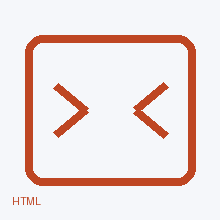
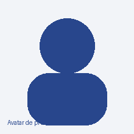
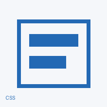

Mi primera publicación
Contá algo sobre esta imagen, tu idea o el proceso de creación de tu perfil.

Estudiante de 9.º aprendiendo HTML y CSS 💻
Cambiá esta biografía por algo que represente tus intereses sin publicar datos personales.
HTML · CSS · creatividad · tecnología
Este espacio fue creado con HTML y CSS. Personalizalo para que tenga identidad propia.

Contá algo sobre esta imagen, tu idea o el proceso de creación de tu perfil.

Podés publicar sobre un hobby, una creación, un paisaje, una mascota o un tema que te interese.
Cambiá una propiedad en estilo.css, guardá y recargá. Observá qué cambió. Esa diferencia visible es la pista que conecta tu código con el resultado.
Una página no está terminada solo porque “se ve linda”. Probala de distintas formas: